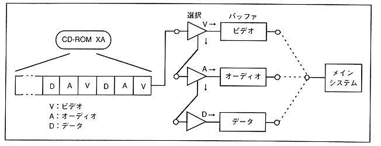

Data flow from the CD-ROM is called a stream. There are audio data, video data and program data in the stream. The stream selection mechanism selects the data type and sends the data to the main system and MPEG (Figure 3.30). The control contents of the stream selection mechanism are as follows:
- Stream data is stored in the CD buffer and selected according to the data type.
- Controls data from CD-ROM, MPEG decoder and other devices in a unified manner.
- Stream selection conditions are set by command.
Figure 3.30 Stream selection mechanism
